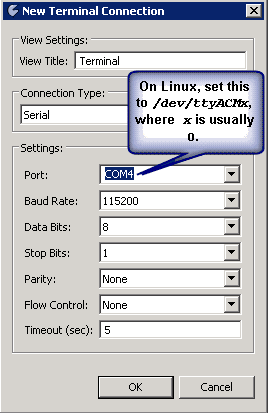

Connecting to the Sourcery Probe Console from Sourcery CodeBench
You can use the Terminal view in Sourcery CodeBench to connect to the virtual serial port console for your probe.
Prerequisites
- Your probe must be connected to your computer.
- Sourcery CodeBench must be installed and running.
Procedure
- From Sourcery CodeBench, select Window > Show Views > Other. This opens the Show Views dialog box. Select Terminal > Terminal and click OK. This opens the Terminal view.
- From the Terminal view, click New Terminal Connection . This opens the New Terminal Connection dialog box.
Figure 2‑4. New Terminal Connection Dialog Box
- Set up the connection to use the settings defined in Sourcery Probe Console. Note that the specific COM port number may vary between computers and between USB ports.
|
Tip: On Linux, /dev/ttyACM0 is the typical device name created by the OS, but if other USB serial devices are active at connection time, the number portion (0) may increase. |
|
- Click OK to connect to the console.
- After connecting, press the <ESC> key in the Terminal window. This brings up the Sourcery Probe Personal Console Menu.
Related Topics